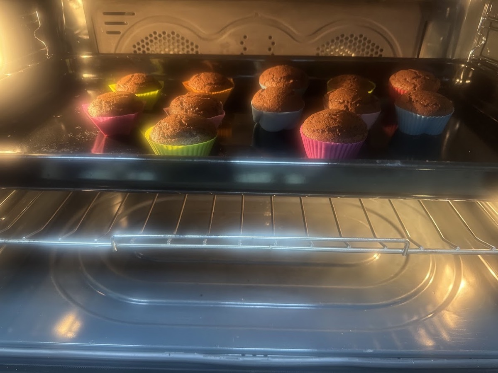

How do you go from baking for yourself to baking for 50 kids you've never met? It all started with the Superheroes and Blue Umbrella event. Every recipe on this site exists because I believe the best part of baking is giving it away.
Baking was never really about making something and keeping it all to myself. It started much earlier than I realised at the time.
There was a cake I made for my mum, because she loved sweets but needed a sugar-free one. There were eggless bakes for friends who couldn't eat eggs. There were birthday cakes made just for the feeling of watching someone's face when they saw what I'd made for them and no one else.
Slowly, without me even noticing it happening, baking had turned into my way of saying, I made this for you.
Then, one afternoon, icing cupcakes for a friend's birthday, a new thought showed up out of nowhere, the way ideas do when your hands are busy and your brain isn't: if this felt this good — making something for one person I already knew — what would it feel like to do that for someone I'd never even met?
I didn't say it out loud. I just kept piping frosting and let the thought sit there, refusing to leave.
Where Velvety Wonders Started to Mean Something Bigger
For days afterward, that question kept creeping back in. While I measured flour. While I watched something bake through the oven glass. I already knew what it felt like to bake for my mum, and for friends. I wanted to know what it would feel like to bake for people who had no idea I existed.
So Velvety Wonders stopped being just a place to share the cakes and cupcakes I made. It turned into a small space where all of that could become something kind — something that could reach past just my family and friends. It's less a hobby page now, and more like a promise I made to myself without fully meaning to.
I didn't know yet what that would actually look like. Then came the invitation for Superheroes and Blue Umbrella, and suddenly I did.
The Night Before Fifty Cupcakes
I decided to make fifty cupcakes for the event.
Fifty.

For someone who still isn't used to baking for a crowd, that's an enormous number of cupcakes. I remember laying out every tray I owned across the counter the night before, like some kind of battle plan — flour, sugar, eggs, more flour, more sugar, until it looked less like baking and more like a science experiment that had gotten a little out of hand.
I wasn't baking just to practice this time. I wasn't baking just because I enjoyed it, either, though I did. I was baking because someone else, on the other end of it, was actually going to receive it. That changed how nervous I felt about the whole thing.
The Great Cupcake Panic: When Things Went Sideways
About halfway through, two of my trays came out looking wrong — flat where they should have puffed up, sunk in a little at the centre. I remember that drop in my stomach, staring at them, knowing I didn't have time to feel bad about it for long.
There wasn't a version of this where I got to just try again tomorrow. So I pulled what I could still save, mixed another quick batch while the oven was still hot, and kept going, tray after tray, until the counter was finally, completely full.
Handing Them Out
There's something different about giving away something you made with your own hands. A cupcake looks small, but behind it is the flour someone measured, the batter someone mixed, the oven someone watched, and the time someone chose to spend making it instead of doing anything else.

Handing out the cupcakes at the event.
I don't think anything I'd baked before prepared me for what it felt like to actually hand one over. There was this one moment — a kid took a cupcake off the tray, looked at it like it was something bigger than a cupcake, and just smiled. Not a polite smile. A real one. And I remember thinking, right then, this is what all those trays and all that panic in the kitchen were actually for.

Seeing those cupcakes reach people made every bit of the effort feel worth it. It became more than just an event. It became a little milestone for Velvety Wonders, and a glimpse of what I wanted baking to actually become. Because if I could make fifty cupcakes to bring a little happiness to people at one event, maybe I could do it again.
And again.
Keeping a Record of It
That's where the charity tracker started meaning more than just a list of numbers. Every bake added to it is a moment when something I made ended up in someone else's hands instead of just sitting on my own table. It's less about counting, and more about remembering why I started giving any of it away in the first place.
There's more ahead, too. New recipes to try. New mistakes to learn from, the way there always are. More cakes to decorate, and hopefully a lot more chances to bake for a reason bigger than myself.
Why the "Why" Actually Matters
Looking back, I don't think the sugar-free cake for my mum, or the eggless ones for my friends, were ever really about sugar or eggs at all. They were about noticing what someone needed and figuring out how to give it to them anyway, even if it meant doing things differently than I was used to.
The charity baking turned out to be exactly that same idea, just stretched out further, to people I'll probably never actually meet. I don't know most of those kids' names. I'll probably never see them again. But while I was baking those fifty cupcakes, I wanted every one of them to be just as good as anything I'd make for my own mum's birthday.
Baking doesn't always have to end with something sitting on my own table anymore. Sometimes the best part comes after — when you hand it to someone else.
Velvety Wonders Cupcakes
The perfect batch when you're baking to make a difference. The ones made for people I've never even met.

This is the cupcake recipe I go back to whenever I'm baking for a crowd, especially when I don't get to see everyone eat them. It's simple enough to make fifty without losing my mind, and good enough that nobody can tell it was made in a rush.
The first time I made a big batch of these for an event, I completely underestimated how different baking for fifty is from baking for four. A couple of trays came out not quite risen, probably because I had too much going on at once and lost track of the oven for longer than I should have. There wasn't time to be upset about it. I pulled what I could still save, mixed a quick extra batch, and kept moving, because this time there was a real deadline, not just a recipe I could try again some other day. It worked out in the end. But it taught me that baking for a cause means being ready to fix things fast, not just get them perfect the first time.
What You Need
For the cupcakes
- 2 cups all-purpose flour
- ¾ cup cocoa powder — unsweetened, so the sweetness stays controlled and the chocolate flavour actually comes through
- 1½ cups sugar
- 1 cup milk — dairy-free milk works exactly the same here, in case someone can't have regular milk
- ½ cup melted butter — swap for oil if you're baking for someone who avoids dairy altogether
- 2 eggs — for an eggless batch, ¼ cup yogurt per egg works fine, so nobody has to miss out
- 2 teaspoons baking powder
- 1 teaspoon vanilla extract
- A pinch of salt
For the chocolate ganache
- 1 cup chocolate chips or chopped chocolate
- ½ cup heavy cream — full-fat coconut cream works as a dairy-free swap, so this part doesn't have to be left out either
Let's Get Baking
Preheat the oven and line your cupcake trays with liners — as many trays as you'll actually need, prepped before you start mixing.
Whisk the flour, cocoa powder, sugar, baking powder, and salt together in one bowl.
In another bowl, mix the milk, melted butter, eggs (or yogurt, if going eggless), and vanilla.
Combine the wet and dry ingredients and stir just until smooth — don't overmix, especially if you're rushing a big batch.
Fill each liner about two-thirds full.
Bake until a toothpick comes out clean, checking a little earlier than the recipe says if you're baking several trays at once, since ovens don't always behave the same with more in them.
Let them cool completely before touching the ganache step — warm cupcakes just melt it right off.
For the ganache, warm the cream until it's just about to simmer, then pour it over the chocolate and let it sit for a minute before stirring until smooth and glossy.
Let the ganache cool slightly so it thickens a little, then spoon or dip each cupcake top into it.
Let the ganache set before boxing them up to give away.
What I Learned
That baking for a cause isn't really about getting it perfect. It's about getting it done, and done with care, even when things go a little wrong along the way — and that ganache takes patience of its own, because rushing it means it slides right off instead of setting properly. Nobody who receives a cupcake knows about the tray that didn't rise, or the ganache I had to rewarm twice. They just know somebody thought of them.
More Than a Recipe
I didn't set out to turn baking into something bigger than a hobby. It just happened, the same slow way baking for my mum or my friends did — one cupcake, one cake, one event, until it stopped being something I did for fun and quietly turned into something I did on purpose.
My baking is really just getting started, and I know that. There's still so much I want to try, so many mistakes I haven't made yet, so many more chances ahead to bake for a reason bigger than myself. But if anyone ever asks me why I keep doing this, I'll probably always come back to that one afternoon, watching a kid smile at a cupcake I made for them and nobody else.
Because sometimes, the sweetest thing I can bake isn't the cake itself. It's the feeling I get to give along with it.